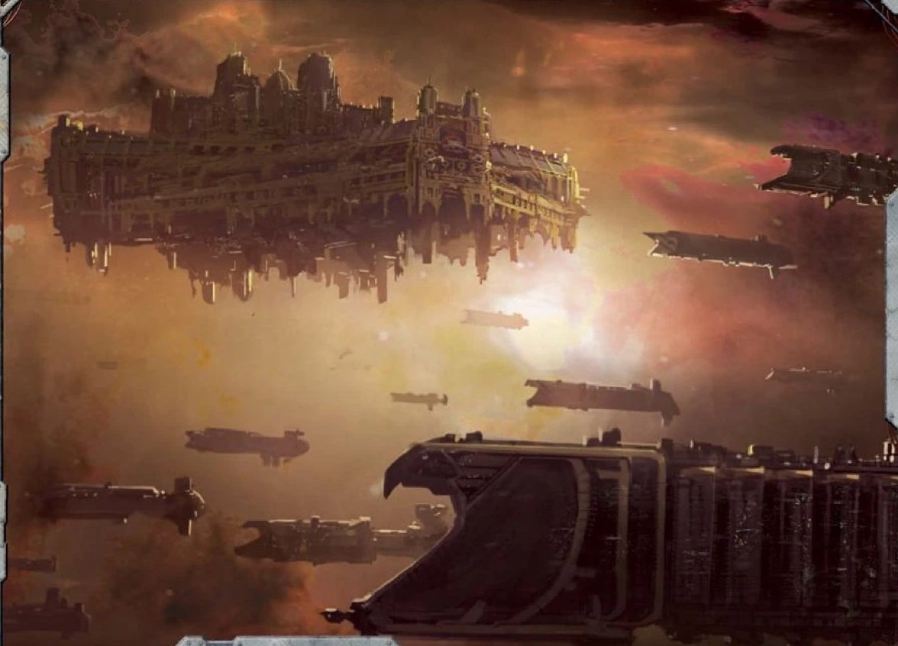

Imperial Armed Forces
| Imperial Armed Forces | |
|---|---|
The Aquila, the emblem borne by every Imperial service | |
| Founded | Unification Wars, late M29 – c. 712.M30; reorganised c. 015.M31 – early M32 |
| Supreme commander | The Emperor of Mankind (in doctrine); in practice the High Lords of Terra |
| Lord Commander | Roboute Guilliman, Lord Commander of the Imperium (since 999.M41) |
| Headquarters | Terra; the five Segmentum Fortresses |
| Land forces | Astra Militarum; Adeptus Astartes; Skitarii; Titan Legions; Knight houses; planetary defence forces |
| Void forces | Imperial Navy; Chapter and Mechanicus fleets |
| Size | Uncounted; Munitorum estimates run to many billions under arms |
| Major wars | Great Crusade; Horus Heresy; Black Crusades; Indomitus Crusade |
The Imperial Armed Forces are the many fighting services of the Imperium of Mankind. They are not a single army under a single commander. They are a collection of separate institutions, each with its own history, law and chain of command, bound together by their loyalty to the Emperor of Mankind and by the authority of the High Lords of Terra. The largest are the Astra Militarum, the Imperium's mass army, and the Imperial Navy, which carries it between the stars. Alongside them stand the Adeptus Astartes, the Space Marines; the armies of the Adeptus Mechanicus; the Imperial Knights; the Adeptus Custodes; the Adepta Sororitas; and the military arms of the Inquisition.[1][2]
This division is deliberate. In the Great Crusade (798.M30 – 000.M31) the Imperial Army, the Legions and the forces of the Mechanicum fought under a single Warmaster, and in 005.M31 that Warmaster, Horus, turned half of them against the Emperor. The reforms that followed the Horus Heresy broke up every great command so that no one commander could again hold such power. The resulting forces are vast and powerful, but slow to combine and often jealous of one another.[3][4]
Since 999.M41 the forces of the Imperium have been led in the Indomitus Crusade by Roboute Guilliman, who as Lord Commander of the Imperium is the first individual since the Heresy to command all of them.[5]
History
[edit]Unification and the Great Crusade
[edit]The armed forces of the Imperium began with the armies of the Unification Wars on Terra, fought from the late 29th millennium to about 712.M30. The Emperor's Thunder Warriors led these campaigns. They were succeeded by the Space Marine Legions and the mass army that became the Imperial Army.[4]
In the Great Crusade the Imperial Army, made up of the Solar Auxilia, the regiments of the Excertus Imperialis and the fleet that carried them, fought beside the twenty Legions of the Legiones Astartes. The Mechanicum of Mars, bound to the Imperium by the Treaty of Olympus in 739.M30, contributed its Taghmata, its Titan Legions and the Legio Cybernetica, and the Knight houses of the Knight worlds marched with them. The whole effort was commanded, from 000.M31, by the Warmaster Horus.[4]
Horus Heresy
[edit]The Horus Heresy (005–014.M31) divided every one of these services. Half the Legions, many Titan Legions and Knight houses and much of the Imperial Army followed Horus. The Schism of Mars split the Mechanicum. The surviving loyalist forces held Terra at the Siege of Terra and drove the Traitors back in the Great Scouring.[4]
The reforms
[edit]In the years after the Heresy, roughly 015–021.M31, Roboute Guilliman reorganised the armed forces. The Codex Astartes divided the Legions into Chapters of about a thousand warriors in the Second Founding. The reforms also began the division of the Imperial Army into the Imperial Guard, now called the Astra Militarum, and the Imperial Navy, a division completed in the Time of Rebirth of the early 32nd millennium, so that no army commander controlled the ships to carry his troops and no admiral controlled an army. The Navy itself was divided among five segmentum fleets. The office of Warmaster was abolished.[3][a]
The Ecclesiarchy's armies
[edit]In the Age of Apostasy of M36 the Ecclesiarchy raised armies of its own, the Frateris Templar, which enforced the Reign of Blood of Goge Vandire. After Vandire's fall the Decree Passive of 288.M36 forbade the Ecclesiarchy to keep "men under arms". The Daughters of the Emperor, being women, became the Orders Militant of the Adepta Sororitas, which the Ecclesiarchy has kept ever since.[6]
Era Indomitus
[edit]The opening of the Great Rift in 999.M41 brought the Imperium close to collapse. Roboute Guilliman, restored to life in that year, was named Lord Commander of the Imperium and launched the Indomitus Crusade. Its fleets combined every arm of the Imperium in battlegroups, and the Primaris Space Marines of the Ultima Founding were distributed to every Chapter. The crusade remains the largest single military undertaking since the Great Crusade.[5]

Branches
[edit]| Service | Role | Head | Founded or reformed |
|---|---|---|---|
| Guardians of the Emperor and the Imperial Palace | Captain-General | Unification Wars, M30 | |
| Null-maiden witch-hunters; allied to the Custodes | The Oblivion Mistress | Early in the Great Crusade, M30 | |
| Space Marine Chapters; strike and crusade forces | Each Chapter Master; no central command | Legions M30; Chapters c. 021.M31 | |
| Mass army; regiments raised by tithe | Lord Commander Militant | Early M32, in the Time of Rebirth (from the Imperial Army) | |
| Void fleets; aerial forces (Aeronautica Imperialis) | Lord High Admiral | Early M32, in the Time of Rebirth (from the Imperial Army) | |
| Cybernetic armies of the forge worlds | Fabricator-General and the forge world magi | Before 739.M30 | |
| God-engines; the heaviest war machines | Princeps Seniores of each Legio | Before 739.M30 | |
| Legio Cybernetica | Battle-automata of the Mechanicus | Archmagos of the Cybernetica | Before 739.M30 |
| Imperial Knights | Knight houses, Questor Imperialis and Questor Mechanicus | The High Monarch of each house | Knight worlds of the Dark Age of Technology |
| Orders Militant of the Ecclesiarchy; Chamber Militant of the Ordo Hereticus | Abbess Sanctorum | 288.M36, from the Daughters of the Emperor | |
| Daemon-hunters; Chamber Militant of the Ordo Malleus | Supreme Grand Master | Late Horus Heresy, M31 | |
| Xenos-hunters; Chamber Militant of the Ordo Xenos | Watch Commanders | Mid-M32, after the War of the Beast | |
| Assassination | Grand Master of Assassins | Great Crusade, M30 | |
| Imperial law enforcement; riot suppression | Grand Provost Marshal | After the Heresy, M31 | |
| Planetary defence forces | Garrisons of individual worlds | Each Planetary Governor | Various |
| Frateris Militia | Armed faithful of the Ecclesiarchy, raised in emergencies | Ecclesiarchy preachers | After 288.M36 |
| Rogue Trader household forces | Private armies of the holders of Warrants of Trade | Each Rogue Trader | Great Crusade, M30 |
Command
[edit]In Imperial doctrine, the Emperor is the commander of every Imperial force, and all oaths are sworn to him. In practice, for ten thousand years, the forces of the Imperium were directed by the High Lords of Terra. The Lord Commander Militant and the Lord High Admiral, who often sit among the High Lords, command the Astra Militarum and the Navy. The Space Marine Chapters, the Mechanicus and the Inquisition each answer to their own masters, and their co-operation with the rest of the Imperium depends on agreement, oath and custom rather than on command.[1]
For a great campaign the High Lords appoint a supreme commander. Such commanders have been styled Lord Solar, Lord Militant or Warmaster of a crusade, and the most famous of them, Lord Solar Macharius, led the Macharian Crusade of 392–399.M41. Since the Heresy, the title of Warmaster of the whole Imperium has never been revived.[2] The return of Roboute Guilliman in 999.M41 restored a single commander over all the armed forces for the first time since the Heresy. He is styled not Warmaster but Lord Commander of the Imperium.[5]
Recruitment and supply
[edit]Most Imperial soldiers come from the Imperial tithe, under which every world must provide a share of its population as soldiers, sailors and psykers. The Departmento Munitorum raises regiments of the Astra Militarum from these tithes and supplies them across the Imperium. The Space Marines recruit from their own homeworlds and recruiting worlds; the Mechanicus recruits its Skitarii from its forge worlds; and the Ecclesiarchy draws its Sisters from the Schola Progenium and its own convents. The officers of the Militarum Tempestus, the commissars of the Officio Prefectus and many Sisters of Battle are orphans of Imperial servants raised in the Schola Progenium.[2][1]

Strength
[edit]No complete count of the Imperial Armed Forces exists. The Departmento Munitorum keeps records of millions of Astra Militarum regiments, and its estimates of the men under arms run to many billions. The Adeptus Astartes number roughly a thousand Chapters, perhaps one or two million warriors in all. The Navy fields many thousands of warships across its five segmentum fleets. To these must be added the forces of the Mechanicus, the Knight houses and every world's own defence force.[2][b]
Timeline
[edit]| Date | Event |
|---|---|
| Late M29 – c. 712.M30 | The Unification Wars; the Thunder Warriors |
| 739.M30 | The Treaty of Olympus joins the Mechanicum's forces to the Imperium |
| 798.M30 | The Great Crusade begins |
| 000.M31 | Horus named Warmaster at the Triumph of Ullanor |
| 005–014.M31 | The Horus Heresy |
| c. 015–021.M31 | The Codex reforms; the Second Founding |
| Early M32 | The Time of Rebirth; the Astra Militarum and Imperial Navy become separate services |
| Mid-M32 | The Deathwatch founded after the War of the Beast (544–546.M32) |
| 288.M36 | The Decree Passive; the Adepta Sororitas founded |
| 392–399.M41 | The Macharian Crusade |
| 999.M41 | The Great Rift; Guilliman named Lord Commander of the Imperium |
| c. 000.M42 | The Indomitus Crusade begins |
See also
[edit]Notes
[edit]References
[edit]- ^ a b c Codex Imperialis (rev. 980.M41). Adeptus Terra.
- ^ a b c d Lexicanum Martialis. Officio Militaris.
- ^ a b Guilliman, Roboute (c. 019.M31). Codex Astartes. Macragge.
- ^ a b c d Chronicles of the Heresy (sealed). Logos Historica Verita, Terra.
- ^ a b c Records of the Indomitus Crusade (ongoing). Office of the Lord Commander.
- ^ Liber Ecclesiasticus (M37). Adeptus Ministorum.